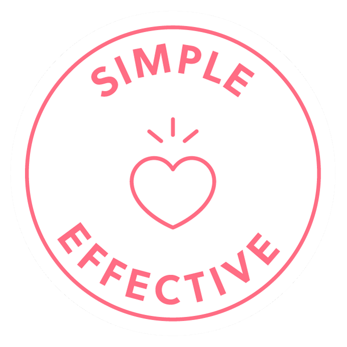
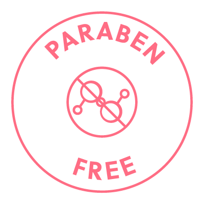
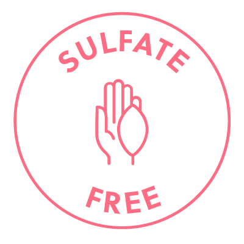

Екстракт листя розмарину лікарського
Стимулює ріст

 72,500+ щасливих красунь
72,500+ щасливих красунь


 Замовте зараз, отримайте Четвер, 13 листопада
Замовте зараз, отримайте Четвер, 13 листопадаГотуйтеся до більш густих, темних і виразних брів! Представляємо сироватку для росту брів ForChics – потужний засіб для покращення вигляду тонких, рідких або надмірно вищипаних брів. Високоефективна формула, що містить науково доведені інгредієнти, спрямовані на зміцнення волосків брів, завдяки чому вони стають густішими і виразнішими вже за 27 днів.
КРОК 1
Зніміть макіяж за допомогою безмасляного засобу для зняття макіяжу або очищувача.
КРОК 2
Нанесіть тонкий шар сироватки для брів ForChics на всю лінію брів. Одного занурення вистачить для обох брів.
КРОК 3
Якщо ви наносите додаткові косметичні засоби, зачекайте, поки сироватка повністю висохне.
КРОК 4
Залиште сироватку на ніч.

Очищена вода, женьшень, екстракт лігуструму люцидум, бутиленгліколь, екстракт ганодерми синенсис, екстракт розмарину лікарського, екстракт кори магнолії лікарської, біотіноїл трипептид-4, міристоїл пентапептид-17, бензоат натрію, сорбат калію, вітамін B7 (біотин), токоферол, вітамін E.
Так, це можливо! Однак ви повинні бути терплячими і послідовними. Час, необхідний для досягнення результатів, може варіюватися, оскільки залежить від стадії циклу росту брів на момент початку використання продукту. Зазвичай для досягнення повних результатів потрібно від 8 до 12 тижнів. Якщо після 12 тижнів послідовного використання ви не досягли жодних результатів, ви маєте право вимагати повернення грошей. Дуже важливо, щоб ви використовували продукт правильно, відповідно до інструкцій.
Сироватка для росту брів ForChics підходить для коротких, тонких і слабких брів. Також підходить для надмірно вищипаних брів або при захворюваннях брів. Сироватку для брів ForChics можна використовувати разом з татуюванням брів, щоб допомогти зберегти здоров'я ваших природних брів, однак ми рекомендуємо спочатку проконсультуватися з майстром з татуювання брів.
Ми пропонуємо безризикову гарантію повернення грошей, якщо ви не досягли жодних результатів після 12 тижнів використання — без зайвих питань!
Оцінка 4,9/5 від понад 72 500 задоволених клієнтів
 Відновилася після рідких брів
Відновилася після рідких брів
 Відновилася після рідких брів
Відновилася після рідких брів


І БІЛЬШЕ 200 НОВИННИХ САЙТІВ
Сироватка для росту брів ForChics містить 100% натуральні
інгредієнти з революційною дією, що сприяють росту густих
і здорових брів.
Сироватка для росту брів ForChics містить 100% натуральні інгредієнти з революційною дією, що сприяють росту густих і здорових брів.
Дивитися повний список інгредієнтівЖеньшень
Відновлює волосяні фолікули
Екстракт розмарину лікарського
Відновлює природній вигляд брів

Екстракт кори магнолії лікарської
Зменшує випадіння волосся
Нове Визначення Чистого Росту Брів


Змініть свої тонкі та надмірно вищипані брови на природні, густіші та темніші.
Ексклюзивна формула
містить інноваційний пептид, який імітує цикл відростання волосся.
Змініть свої тонкі та надмірно вищипані брови на природні, густіші та темніші. Ексклюзивна формула містить інноваційний пептид, який імітує цикл відростання волосся.
Відчуйте, як ваші природні брови досягають свого повного потенціалу росту всього за 30 днів завдяки сироватці для росту брів ForChics. НАГАДУВАННЯ: створення процедури догляду за бровами вимагає послідовності. Тривалі результати досягаються завдяки терпінню та щоденному використанню.
1 ТИЖДЕНЬ
Готуйся, Шик! Більш густі брови вже на підході.
2 ТИЖДЕНЬ
Продовжуй! Послідовність – це ключ до успіху. Якщо ти забула, просто нанеси засіб наступного дня!
3 ТИЖДЕНЬ

Подивіться на ці брови! Ти повинна почати помічати їх ріст.
4 ТИЖДЕНЬ
Тепер ти можеш мати на 100% свої власні, помітно густіші та повніші брови!
Що Робить ForChics Особливим
Наша НОВА та вдосконалена формула сироватки для росту брів містить рослинні екстракти, пептиди та протеїни, які природним чином сприяють росту брів.


Зростайте і сяйте або поверніть свої гроші. Ми впевнені, що ви полюбите продукти ForChics!
Якщо ви не побачите результатів, ви можете претендувати на повернення грошей.
Шлях до зростання у кожного свій, проте ми настільки впевнені в ефективності наших сироваток,
що пропонуємо 60-денний безризиковий пробний період!
Використовуйте сироватку для покращення брів ForLash протягом 60 днів. Документуйте результати щотижневими фотографіями та обов'язково дотримуйтесь наших рекомендацій щодо використання. Якщо після закінчення цього періоду ви не побачите жодних результатів, хоча дотримувались наших рекомендацій, ви маєте право на гарантію росту. Перейдіть на сторінку «Гарантія росту», щоб подати заявку.
Часті запитання
Склад: очищена вода, женьшень, екстракт лігуструму люцидум, бутиленгліколь, екстракт ганодерми синенсис, екстракт розмарину лікарського, екстракт кори магнолії лікарської, біотіноїл трипептид-4, міристоїл пентапептид-17, бензоат натрію, сорбат калію, вітамін B7 (біотин), токоферол, вітамін E
*Примітка: Рекомендуємо використовувати продукти ForChics протягом 1-2 місяців, при температурі від 36° до 77 °F та щільно закривати кришку після використання.
З сироваткою для росту брів ForChics ви можете побачити результати вже через 4 тижні, а до 4-го тижня довжина брів збільшиться на 70%. Однак кожна людина індивідуальна, тому будьте терплячі до себе. Не забудьте зробити фотографії на 1-й, 15-й і 30-й день, щоб отримати право на нашу гарантію росту!
Важливо пам'ятати, що все хороше вимагає часу! Брови не відростуть за одну ніч, тому вам потрібно буде регулярно застосовувати засіб. Будьте терплячі. Густі брови вже не за горами!
Наш пептидний комплекс, що стимулює ріст брів, підтримує природний цикл оновлення брів, роблячи їх густішими, виразнішими та здоровішими. Формула з високим вмістом мінералів допомагає поповнити брови необхідними білками та вітамінами, які надають їм блиск і сяйво.
Унікальні зволожуючі речовини забезпечують чудове зволоження, утримуючи вологу та покращуючи гнучкість і еластичність.
Ви повинні використовувати сироватку для брів ForChics один або два рази на день! Для досягнення максимального результату ми рекомендуємо застосовувати її 2 рази на день протягом перших 2 місяців! Перед нанесенням переконайтеся, що шкіра чиста. Якщо ви пропустили один день, просто продовжуйте на наступний день :)
Наша формула спеціально розроблена, щоб бути м'якою і безпечною для всіх, включаючи онкологічних хворих! Наші продукти не містять парабенів, а також не містять глютену і є веганськими. Однак все одно слід уникати потрапляння формули в очі. У разі потрапляння в очі ретельно промийте їх водою.
Крім того, якщо ви лікуєтеся від будь-яких очних захворювань, використовуйте сироватку для росту брів ForChics під наглядом лікаря. Зберігайте в недоступному для дітей місці. Перед нанесенням рекомендуємо вимити руки та обличчя м'яким милом і водою.
Якщо ви вагітні або годуєте груддю, перед використанням рекомендуємо проконсультуватися з лікарем.
Один тюбик сироватки для брів ForChics вистачить на 1-2 місяці, залежно від частоти застосування.
Порада від професіоналів: для досягнення найкращих результатів рекомендуємо застосовувати сироватку двічі на день протягом перших 2 місяців! Також для досягнення максимального ефекту рекомендуємо замінювати старі флакони кожні 2 місяці.
Так, всі продукти ForChics не тестуються на тваринах, оскільки ми ніколи не тестували і ніколи не будемо тестувати наші продукти на тваринах. Ми також не співпрацюємо з виробниками, які проводять тестування на тваринах. Ви можете бути спокійні, знаючи, що ForChics на 100% не тестує свої продукти на тваринах!
Так, нашу сироватку для брів можна використовувати з татуюванням брів або мікроблейдингом. Вона допомагає живити та стимулювати ріст ваших природних брів, але будьте обережні в області нанесення.
Якщо у вас чутлива шкіра або в анамнезі є алергічні реакції, рекомендуємо спочатку провести тест на алергію. Нанесіть невелику кількість сироватки на зап'ястя або за вухом і почекайте 24 години, щоб перевірити, чи немає ознак подразнення.
Ні, він спрямований на стимулювання росту і збільшення густоти, а не на зміну природного кольору брів. Ваші брови залишаться того ж відтінку, але стануть більш густими і виразними.
Зберігайте сироватку для росту брів ForChics у прохолодному, сухому місці, подалі від прямих сонячних променів. Це допоможе зберегти активні інгредієнти та забезпечить ефективність сироватки протягом усього терміну придатності.
Кожна упаковка містить сироватку для росту брів ForChics, вимірювальний інструмент та інструкцію.
Крок 1: Скрабуйте-скрабуйте! Ретельно вимийте обличчя, щоб видалити залишки косметики та забруднення.
Крок 2: За допомогою аплікатора нанесіть засіб на брови, проводячи ним по них.
Крок 3: Дайте сироватці повністю висохнути, перш ніж завершувати процедуру. Повторюйте ці кроки щодня.
Інформація про доставку
Щоб переглянути всі доступні способи доставки та будь-яку інформацію, пов'язану з перебоями або затримками в доставці, відвідайте статтю «Інформація про доставку».
Інформація про повернення
Якщо ваше замовлення є неправильним, несправним або відсутнім, надішліть електронний лист на адресу hello@forchics.com, і ми зможемо обговорити це з вами. Якщо ви незадоволені отриманими товарами, ви можете повернути їх нам протягом 60 днів з моменту отримання, за умови, що ви маєте право на нашу Гарантію зростання. Щоб дізнатися більше про нашу Гарантію зростання, перейдіть до статті «Політика повернення».
Наша передплата на доставку ForChics в середньому коштує менше на місяць, ніж стандартна ціна в галузі. У порівнянні з рецептурними сироватками для брів або мікроблейдингом, ForBrow економить вам понад 100 доларів щомісяця!
Оцінка 4,9/5 від понад 72 500 задоволених клієнтів
 @officalkalo
@officalkalo
 @stela_remi
@stela_remi
 @justpamella
@justpamella
 @trulymeganblog
@trulymeganblog
 @rhibrai
@rhibrai
 @Kim_kine
@Kim_kine
 @shareemichelle_
@shareemichelle_
 @therubirose_
@therubirose_
Відгуки клієнтів
На основі 1390 відгуків
На основі 1390 відгуків
У мене були дуже рідкі, надмірно вищипані брови. Я не думала, що це допоможе, але була в розпачі і не мала чого втрачати. На мій подив, це дійсно працює, але не варто чекати чудес, це не відбувається за одну ніч. Після 8 тижнів дворазового нанесення препарату я помітила величезну різницю. Мені більше не потрібно користуватися олівцем для брів, я дуже задоволена результатом.
Дуже подобається цей продукт, він дійсно працює! Мої брови добре заповнюються, дуже рекомендую.
Це був чудовий досвід.
Користуюся вже 2 місяці, спочатку використовувала двічі на день, а зараз використовую двічі на день, тому що флакон не вистачає надовго. Я бачу поліпшення, це не щось кардинальне, якщо ви шукаєте невелику допомогу, але різниця є!

Безкоштовна доставка всіх замовлень.
Спробуйте нас протягом 60 ночей. Не сподобалося? Повний повернення коштів.
Проста політика повернення для вашого спокою.



Як ви оцінюєте ефективність?
Вік: 55 - 64
Як би ви оцінили швидкість отримання результатів?
Бідний Добре ВідмінноМоя проблема: надмірно вищипані брови
Брови
Поки що я бачу деякі рішення. Я продовжуватиму купувати цей товар 😊
Це було корисно?